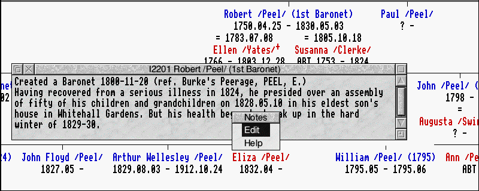

In normal use, a second window is open, showing the notes for the current person in your tree (it is possible to close this window via its close icon, if your screen is too cluttered:- to reopen it, click select on any person to make them current (this includes the person who is already current) and the notes window will reopen).
Clicking menu on this notes window brings up a small menu:

Choosing "Edit" from this menu has the same effect as clicking select in the notes window - a call is made to an external editor to edit these notes. Editors like !Zap and !StrongEd use the full protocol and are able to hand the edited notes back to !Family when you have finished, but !Edit does not do this (at least, not in RISC OS 4 or earlier).
This interface is not entirely intuitive and it is important not to change the current person whilst editing notes this way, as closing the editor will send the notes back to !Family, overwriting the notes of whoever is now the current person. It is hoped to overcome this limitation in a future release of !Family, as it is useful to have the notes on more than one person open so that you can copy or move text from one to another.
With !Zap or !StrongEd, when you have finished editing, you can simply close the editor window via its close icon. This will pop up a dbox warning that the text has been changed (this is always the case, even when it hasn't). If you click on "Save and close", the notes will be saved back to the current person in !Family and the Notes window will be updated. If you click on "Discard" the notes will not be copied back to !Family.
The second item on the Notes window pop-up menu, is "Help", which should open this ScreenBook page in your favourite browser.
Next | Prev | Table of Contents